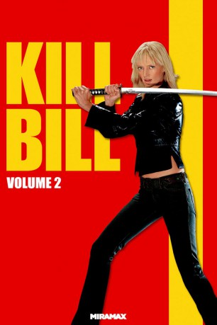
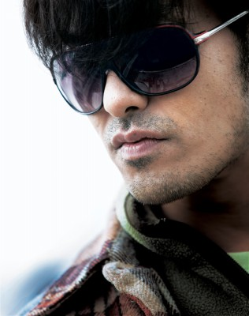
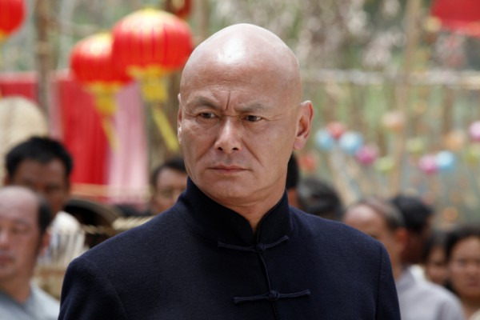

#4637 Kill Bill: Vol. 2
 
 IMDB-Wertung: 8.0 / 10
IMDB-Wertung: 8.0 / 10  Metascore: 0
Metascore: 0 
Die blutdurstige Rache der Braut ist noch nicht gestillt: Drei Namen stehen noch auf der Liste der kalten Schönen, die am Tag ihrer Hochzeit ins Jenseits befördert werden sollte und jetzt Jagd auf die macht, die ihren Tod verlangten. Nach Verdita Green und O-Ren Ishii sind nun der heruntergekommene Budd und die durchtriebene Elle Driver an der Reihe, bevor die Braut in Mexiko schließlich ihrem einstigen Chef und Liebhaber Bill gegenübersteht - und ihrer totgeglaubten Tochter.
Jahr: 2004
Dauer: 136 Minuten
FSK: 16
Land: USA Studio: MiramaxTonspuren:
Untertitel: Deutsch,
Auflösung: 1080p (1920x800) Größe: 11673 MB
Genre: Action, Krimi, Drama, Thriller
Regisseur:  Quentin Tarantino
Quentin Tarantino
Drehbuch: Stephen Sommers
Soundtrack:
Darsteller:
 Vivica A. Fox als Vernita Green
Vivica A. Fox als Vernita Green- Ambrosia Kelley als Nikki
 Michael Parks als Earl McGraw / Esteban Vihaio
Michael Parks als Earl McGraw / Esteban Vihaio James Parks als Edgar McGraw
James Parks als Edgar McGraw- Jonathan Loughran als Trucker
 Michael Bowen als Buck
Michael Bowen als Buck Jun Kunimura als Boss Tanaka
Jun Kunimura als Boss Tanaka-  Kazuki Kitamura als Boss Koji / Crazy 88
- Julie Manase als Crazy 88
- Chiaki Kuriyama als Gogo
-  Chia-Hui Liu als Johnny / Pai Mei
 Lucy Liu als O-Ren Ishii
Lucy Liu als O-Ren Ishii Shin'ichi Chiba als Hattori Hanzo
Shin'ichi Chiba als Hattori Hanzo- Julie Dreyfus als Sofie Fatale
 Bo Svenson als Reverend Harmony
Bo Svenson als Reverend Harmony Caitlin Keats als Janeen
Caitlin Keats als Janeen Christopher Allen Nelson als Tommy Plympton
Christopher Allen Nelson als Tommy Plympton Samuel L. Jackson als Rufus
Samuel L. Jackson als Rufus Sid Haig als Jay
Sid Haig als Jay- Larry Bishop als Larry Gomez
 Laura Cayouette als Rocket
Laura Cayouette als Rocket Clark Middleton als Ernie
Clark Middleton als Ernie Michael Madsen als Budd
Michael Madsen als Budd Daryl Hannah als Elle Driver
Daryl Hannah als Elle Driver- Claire Smithies als Clarita
- Helen Kim als Karen
 David Carradine als Bill
David Carradine als Bill- Perla Haney-Jardine als B.B.
 Uma Thurman als Beatrix Kiddo
Uma Thurman als Beatrix Kiddo- Thea Rose als Melanie Harrhouse
- William Paul Clark als Soda Jerk
- Al Manuel Douglas als Marty Kitrosser
 Lawrence Bender als Hotel Clerk , uncredited
Lawrence Bender als Hotel Clerk , uncredited- Tom Hartig als My Oh My Club Pool Player , uncredited
 Gary Rodriguez als Precision Driver , uncredited
Gary Rodriguez als Precision Driver , uncredited Quentin Tarantino als Director's Voice , uncredited
Quentin Tarantino als Director's Voice , uncredited- Kenji Ohba als Bald Guy
- Yoshiyuki Morishita als Tokyo Businessman
- Goro Daimon als Boss Honda
 Akaji Maro als Boss Ozawah
Akaji Maro als Boss Ozawah- Shun Sugata als Boss Benta
- Sachiko Fujii als The 5, 6, 7, 8's
- Ronnie Yoshiko Fujiyama als The 5, 6, 7, 8's
- Yoshiko Yamaguchi als The 5, 6, 7, 8's
- Sakichi Satô als Charlie Brown
- Tetsuro Shimaguchi als Crazy 88
- Yôji Tanaka als Crazy 88
- Sô Yamanaka als Crazy 88
- Issei Takahashi als Crazy 88
- Yuki Kazamatsuri als Proprietor
Datei: X:\FSK18-Collections\Kill Bill\Kill Bill Vol. 2 (2004, FSK16, 1920x800).mkv seit 26.10.2016
Festplatte: FSK18
 Es gibt insgesamt 7 Filme in der Gruppe 'FSK18-Collections\Kill Bill'
Es gibt insgesamt 7 Filme in der Gruppe 'FSK18-Collections\Kill Bill'